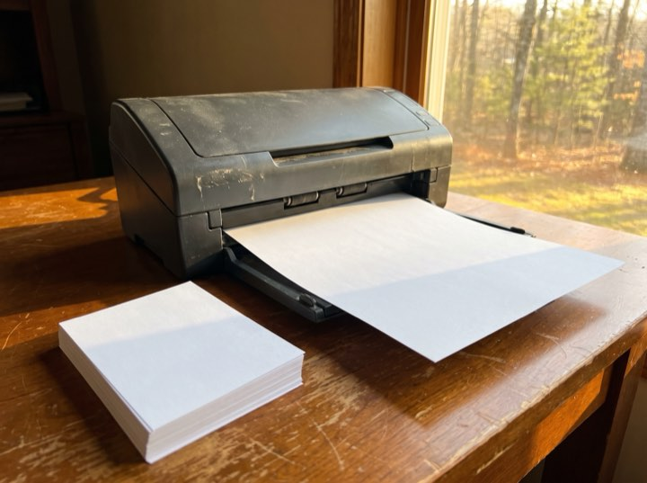
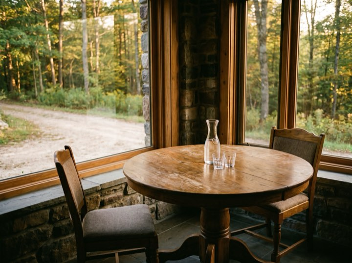

Business tax & compliance
Federal, state and local returns, filed early rather than extended. Extensions are a symptom, not a service.
Business advisory & tax
Business accounting, tax and advisory for owner-managed companies. Four scheduled conversations a year, booked in advance, so decisions get made in the months when they can still change the outcome.
Services
We work with owner-managed businesses between roughly $500k and $20M in revenue. Below that we'll point you somewhere better suited.
Federal, state and local returns, filed early rather than extended. Extensions are a symptom, not a service.
Books closed by the tenth, with a short written commentary. You should not be finding out about last quarter in April.
Entity structure, owner compensation, cash-flow forecasting and the tax planning that only works if it happens before December.
Included for owners of business clients. Your company and personal position are the same problem and should be looked at together.
Results
“Fixed monthly fee. I stopped dreading the invoice.”
Owen R. · Construction, $6M“Tax planning in October instead of a surprise in April.”
Dilip C. · Professional services“The portal alone was worth the switch.”
Frances M. · Retail, $2M“They restructured our entity and it paid their fee eight times over.”
Bryn A. · ManufacturingProcess
Easier than people think, and best done between May and August rather than in January.
Thirty minutes. What your business does, what's currently painful, and whether we're the right size for each other.
We look at two years of returns and your current books, then propose a fixed monthly fee. No hourly billing, ever.
We request records from your current accountant, so you don't have to have that conversation. Usually two to three weeks.
Books monthly, a proper conversation quarterly, tax planning in the autumn while it can still change the outcome.
The rhythm
Four stations in the year and a room for each. The panic in April is what happens to firms without them.


May through August is when a tax position is actually built. By January we are all just reporting what already happened.
Fixed monthly fees. Business clients from roughly $500k revenue. Free discovery calls.